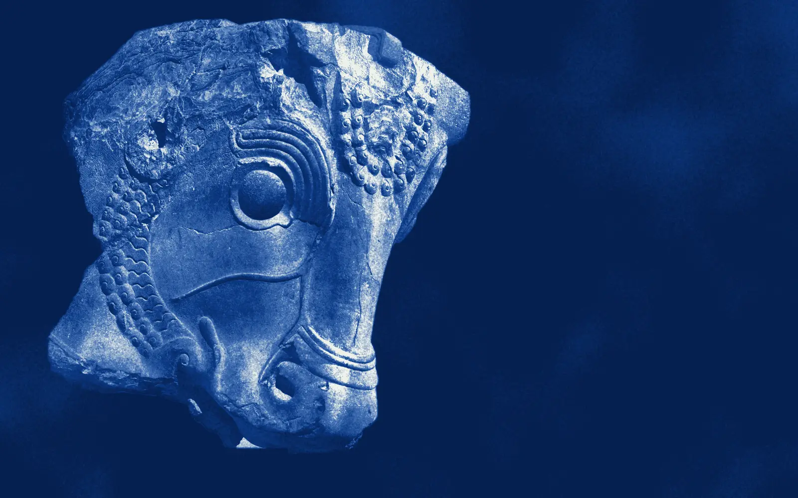
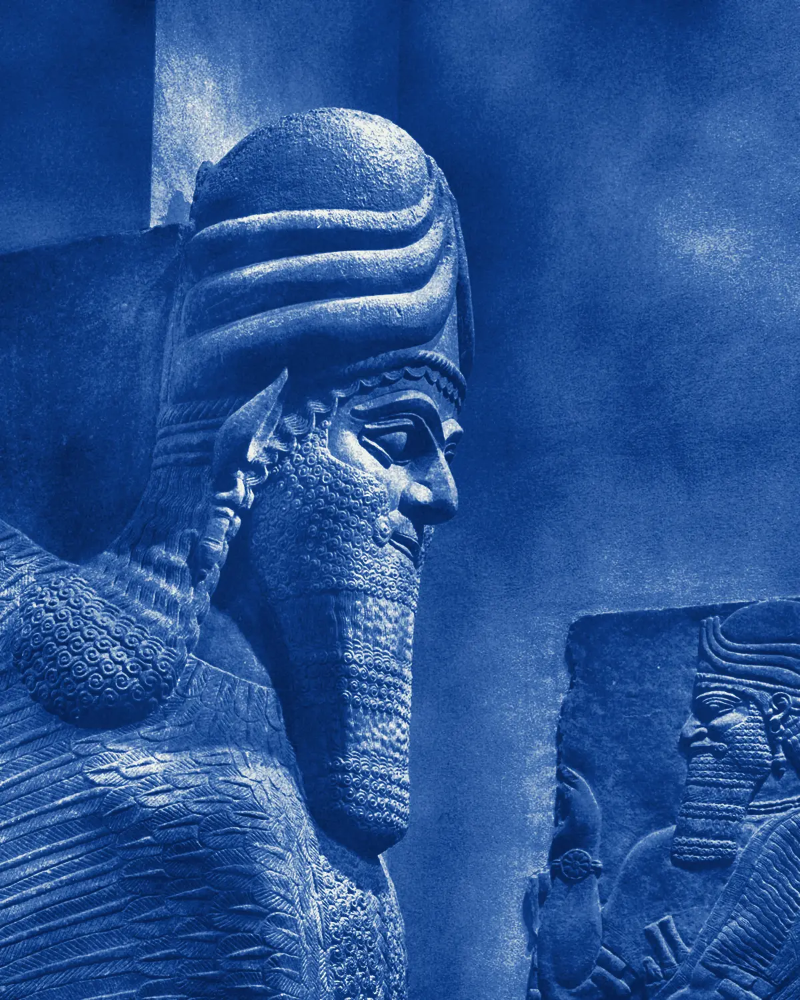

Joveyra
Platform
A trading platform for institutions and professional traders of the Middle East. English and Persian.
Pl. I · Guard, from Persepolis · Achaemenid, ca. 486–465 BCE · The Met
Joveyra Platform
For too long, the traders of this region have worked on systems built somewhere else: for other markets, in other languages, on other people's hours. Their orders crossed borders before they reached an exchange. Their data was kept by people who never had to answer to them.
We are building a platform from the region, for the region. It runs on the infrastructure that carries Joveyra's own capital. It speaks English and Persian as first languages. It keeps its data here, under the law of the place where the trades are made.
It is not open to everyone. Invitations are being extended now.

Execution
Orders take the shortest route to the exchange, on the same infrastructure that carries Joveyra's own capital. Every price and every fill can be traced to its source.
Pl. II · Capital with a bull's head, Persepolis · Achaemenid, ca. 5th c. BCE · The Met

Sovereignty
The lamassu stood at the gates of Assyrian palaces and decided what passed. The platform's data is hosted in the region, governed by its law, and never moved abroad.
What it does
- 01
Terminal
Every market the platform covers, on one surface.
- 02
Execution
Direct, low-latency routing on our own infrastructure.
- 03
Data
Every value traceable to its source.
- 04
Analytics
Research-grade models and tools, the kind Joveyra uses itself.
- 05
Sovereignty
Hosted in the region, under the region's law.
- 06
Language
English and Persian, natively. Neither is a translation.